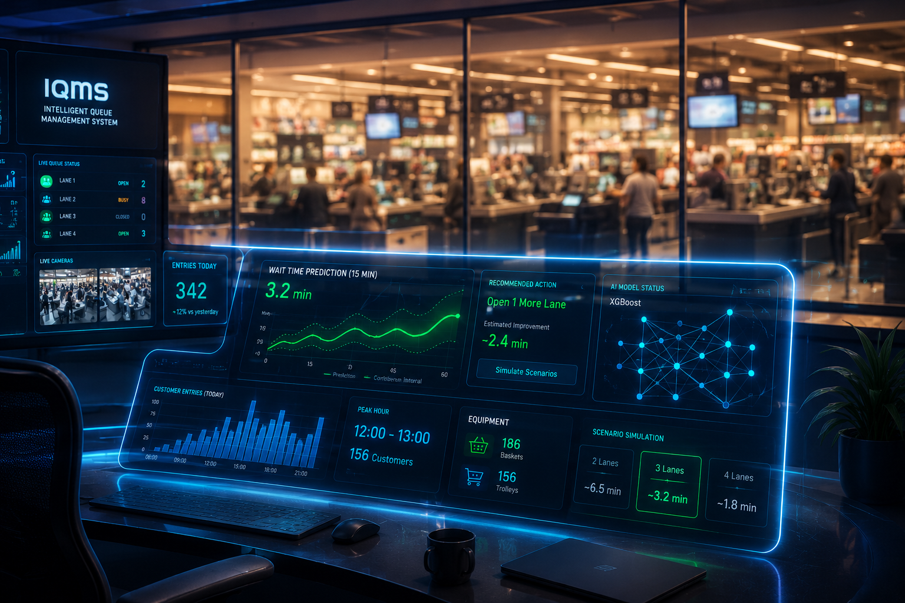
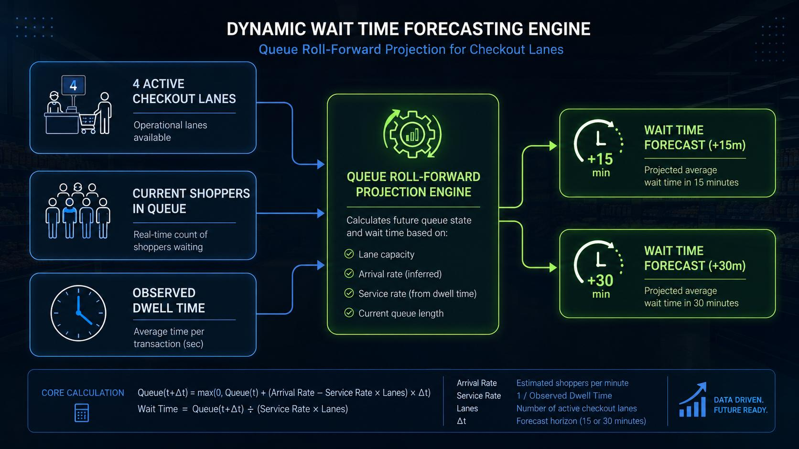
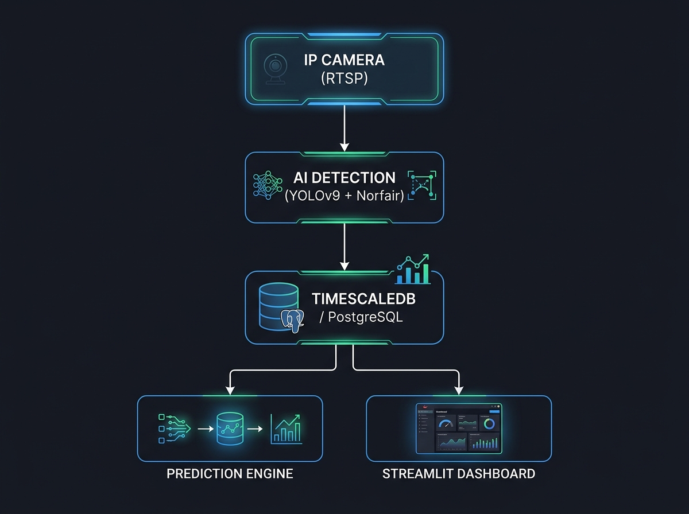
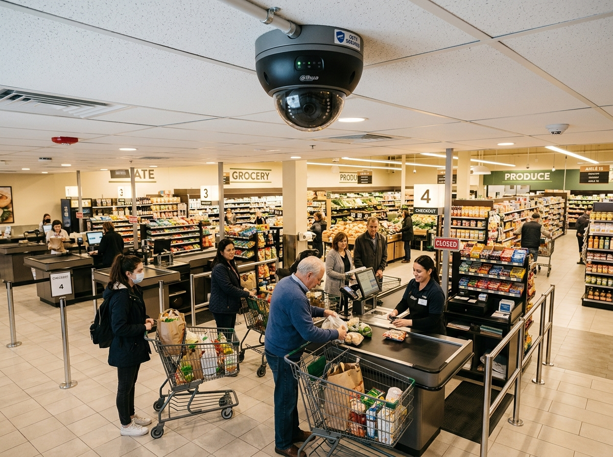
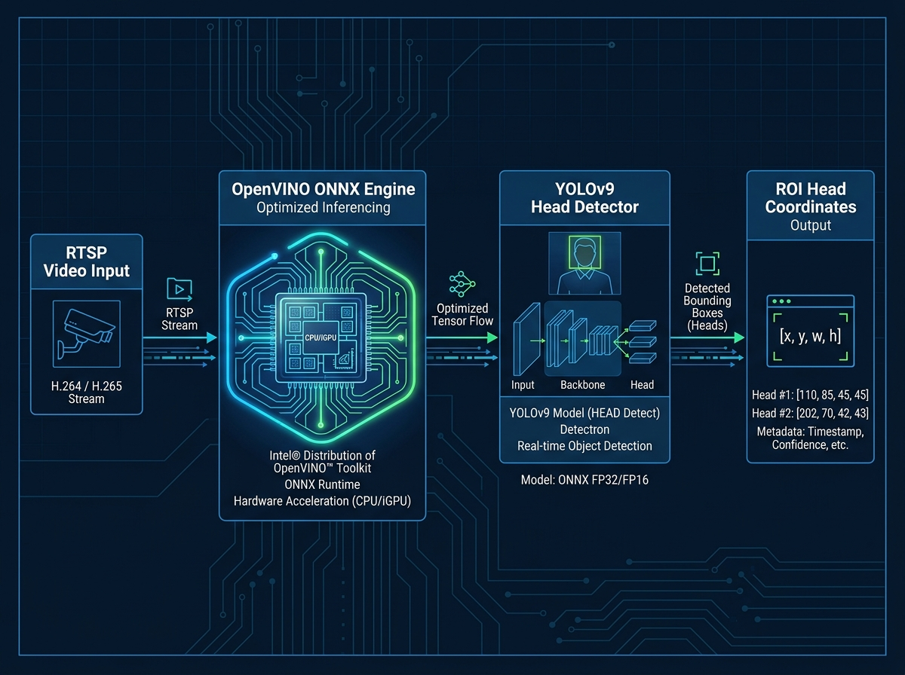
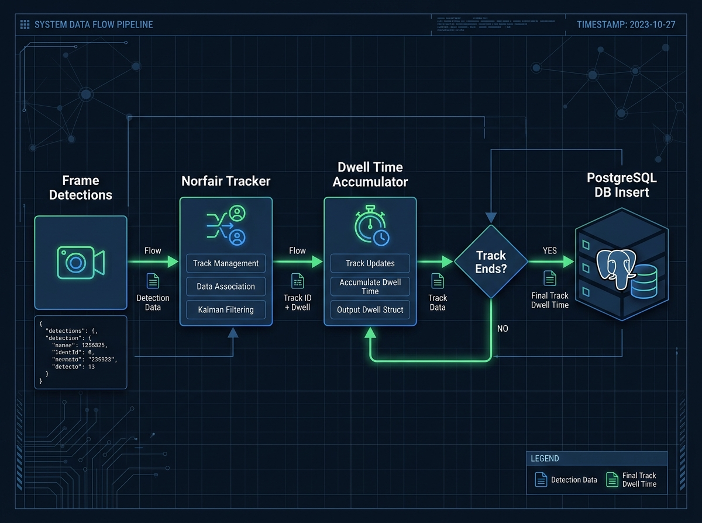
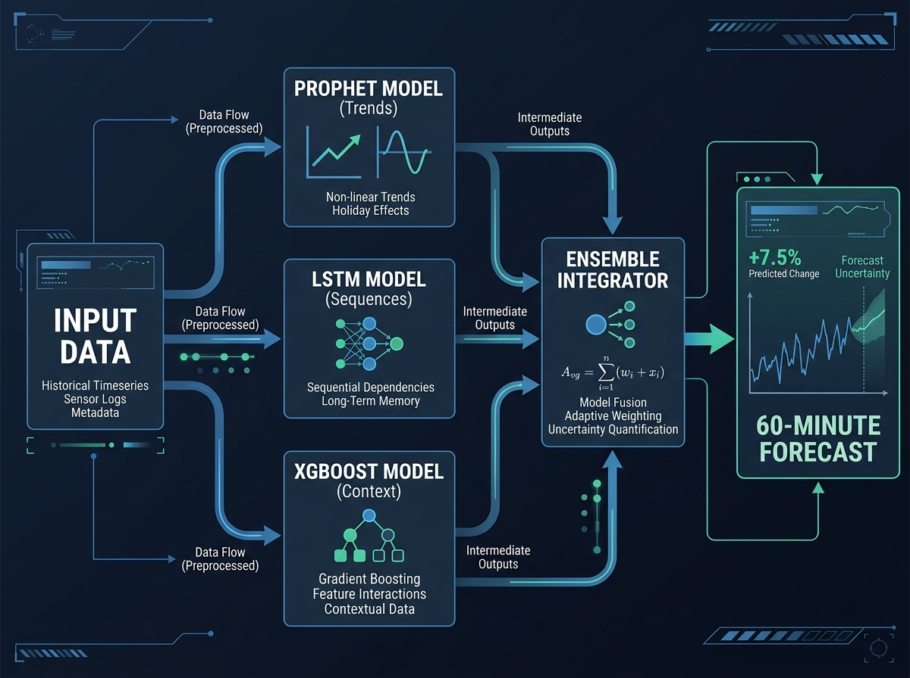
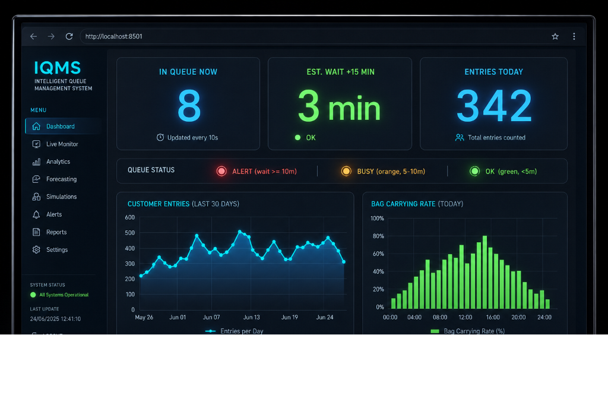
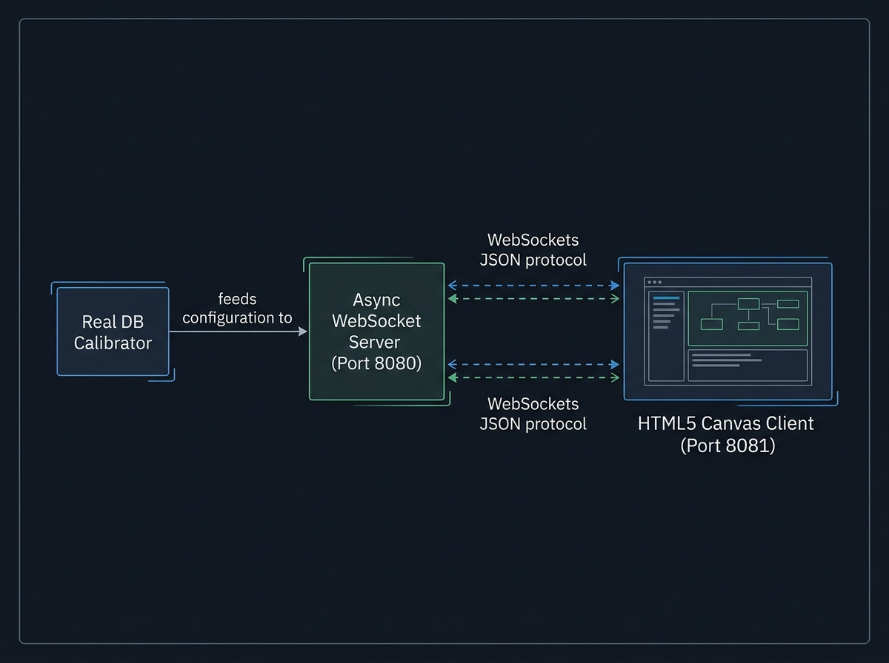
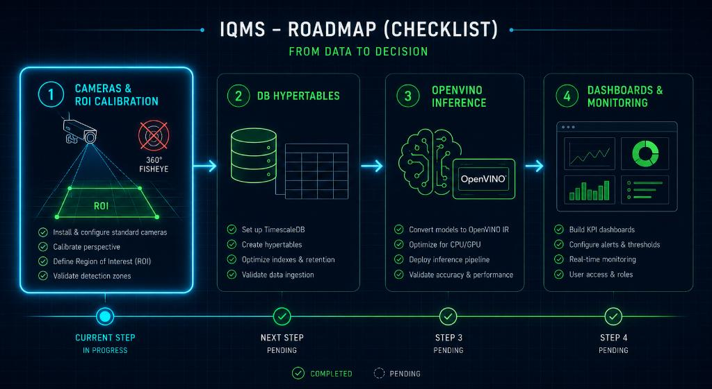

Retour d'Expérience — Juin 2026

Le point de friction numéro 1 en magasin : l'attente en caisse.
| Enjeu | Défi Actuel | Impact |
|---|---|---|
| Expérience Client | Attente perçue comme interminable | Baisse de satisfaction, paniers abandonnés |
| Ressources Humaines | Ouverture de caisses en retard | Surcharge du personnel, coûts opportunité |
| Pilotage | Décisions basées sur l'intuition | Réactivité seulement, pas de prévention |
La promesse IQMS : Transformer la vidéosurveillance existante en données actionnables pour anticiper les embouteillages avant qu'ils ne surviennent.
| Objectif | Cible | Statut |
|---|---|---|
| Fiabilité du comptage vidéo | Taux de détection > 95% | Atteint |
| Précision prédictive | Anticiper à +15, +30, +45 min | Atteint |
| Stabilité de la stack | 7 jours de flux continu sans incident | Atteint |
| Facilité d'intégration | Documenter le déploiement pour intégrateur | Atteint |

CAMÉRA IP (RTSP)
│
▼
┌─────────────────────────────────────────┐
│ DÉTECTION & SUIVI IA (Python/OpenCV) │
│ • YOLOv9 (détection) │
│ • Norfair (tracking multi-objets) │
└──────────────┬──────────────────────────┘
│ Événements anonymisés
▼
┌─────────────────────────────────────────┐
│ TIMESCALEDB (PostgreSQL) │
│ • entrance_events — passages clients │
│ • queue_state_snapshots — état file │
│ • queue_predictions — prévisions │
└───────┬─────────────────┬───────────────┘
│ │
▼ ▼
┌──────────────┐ ┌──────────────────────┐
│ SIMULATEUR │ │ DASHBOARD STREAMLIT │
│ 2D Canvas │ │ http://localhost: │
│ WebSocket │ │ 8501 │
└──────────────┘ └──────────────────────┘
│
▼
┌─────────────────────────────────────────┐
│ MOTEUR PRÉDICTION (Ensemble) │
│ Prophet 40% + LSTM 30% + XGBoost 30% │
│ Entraînement auto, persistence modèles │
└─────────────────────────────────────────┘Principe clé : Traitement vidéo asynchrone, préparation décorrélée de la supervision temps réel.

Règle d'or : Vue en plongée légère (30–45°) pour distinguer les clients alignés.
Caméras Panoramiques 360° : Perspectives Futures
Prévues initialement mais non déployées lors du POC pour des raisons techniques. Elles gardent un fort potentiel pour valider la présence des caissiers (ligne active) et suivre le flux de sortie global. Préférer les caméras IP standard pour le tracking unitaire en attendant.

| Critère | Option A : Head-Detector | Option B : Corps + Visage |
|---|---|---|
| Modèle | YOLOv9 (têtes uniquement) | YOLOv9 + Uniface (corps complet) |
| Données | Passage, durée | + Genre, âge, sacs |
| Cas d'usage | Forte densité, flux rapide | Analyses marketing, caisses |
| Matériel | CPU (Intel + OpenVINO) / GPU | CPU standard |
| Performance | Rapide, léger | Riche, détaillé |

Le problème : Les trackers traditionnels écrivent à la première détection, créant des doublons si l'objet disparaît brièvement.
La solution IQMS :
1. Détection → Le client entre dans la zone ROI
2. Suivi continu → Accumulation des données (genre, âge, sacs) frame par frame
3. Validation → Écriture en base UNIQUEMENT quand le track disparaît définitivement
4. Résultat : Un seul enregistrement par client, avec durée de présence exacte

| Métrique | Résultat | Commentaire |
|---|---|---|
| Taux de détection | > 95% | Supérieur aux attentes |
| Cohérence tracking | Excellente | Même en cas d'arrêts prolongés en file |
| Tolérance lumineuse | Élevée | Variations jour/née gérées |
| Charge CPU (GPU) | < 30% | Optimisation TensorRT efficace |
| Latence bout-en-bout | < 2s | De la caméra au dashboard |
Verdict : L'analyse vidéo est prête pour la production.
Pourquoi PostgreSQL + TimescaleDB ?
Hypertables & Tables principales :
entrance_events (Hypertable) — passages client (avec genre, âge, sacs, durée)queue_state_snapshots (Hypertable) — captures de file d'attente (toutes les 10s)service_events (Hypertable) — temps de service/transaction final en caissequeue_predictions (Table) — historique des prévisions d'attente généréesCombinaison optimale : Prophet + LSTM + XGBoost ensemblés
| Modèle | Poids | Rôle | Fréquence |
|---|---|---|---|
| Prophet | 40% | Tendances saisonnières (heures, jours, week-ends) | Entraîné toutes les 24h |
| LSTM | 30% | Séquences temporelles, réactivité aux changements brusques | Entraîné toutes les 24h |
| XGBoost | 30% | Variables contextuelles (caisses ouvertes, lag temporel) | Entraîné toutes les 24h |
Optimisation : Les modèles sont persistés sur disque et rechargés sans réentraînement systématique, divisant la consommation CPU par 10.

Formule classique (statique) : Temps d'attente = Clients en file / Débit horaire
Formule IQMS (dynamique) :
1. Lecture instantanée de l'état réel (queue_state_snapshots)
2. Prise en compte du nombre de caisses actives
3. Projection Prophet/LSTM/XGBoost sur +15, +30, +45 minutes
4. Estimation temps d'attente avec file d'attente virtuelle
Seuils d'alerte :
Interface web Streamlit accessible à http://localhost:8501
| Indicateur | Description | Fréquence |
|---|---|---|
| IN QUEUE NOW | Personnes actuellement en file | 10 secondes |
| EST. WAIT +15m/+30m/+45m | Temps d'attente estimé | Toutes les 15 min |
| ENTRIES TODAY | Total entrées depuis minuit | Temps réel |
| STATUT | OK / BUSY / ALERT | Continu |

| Défi | Symptôme | Solution Mise en Œuvre |
|---|---|---|
| Spam de réinsertion | 644 entrées en 3 min (normal: 10-30) | Pattern insert-at-death : écriture unique à la disparition du track |
| Doublons historiques | Données de test contaminées la production | Préfixe SIM_* sur les caméras de test, filtres par source |
| Décalage horaire | Grafana ne détectait pas les timestamps | Migration globale vers TIMESTAMPTZ |
| Granularité mixte | Buckets 1 min (réel) vs 5 min (sim) | Uniformisation à 3 minutes pour tous |
| Surcharge disque | Écritures continues toutes les secondes | Limitation à toutes les 2 secondes réelles |
Architecture triple service :
Caractéristiques des clients simulés :
Utilité : Tester la stack complète sans caméras physiques, valider les scénarios de rush.

Stack technique complète :
| Couche | Technologie | Version |
|---|---|---|
| Détection IA | YOLOv9 ONNX + Norfair | Latest |
| Accélération | OpenVINO / TensorRT | 2024.x |
| Base de données | PostgreSQL + TimescaleDB | 14+ / 2.x |
| Prédiction | Prophet + LSTM + XGBoost | Python 3.10+ |
| Dashboard | Streamlit | 1.28+ |
| Visualisation | Grafana | 10+ |
| Mobile | React Native + Expo | SDK 50+ |
| Phase | Action | Délai Estimé |
|---|---|---|
| 1. Matériel | Installer caméras IP en perspective, calibrer ROI | 1/2 journée |
| 2. Database | Déployer PostgreSQL + TimescaleDB, créer hypertables | 2 heures |
| 3. IA | Activer OpenVINO, charger modèle YOLOv9 | 1 heure |
| 4. Services | Lancer scheduler Streamlit + prédiction | 30 min |
| 5. Supervision | Connecter Grafana, configurer alertes | 1 heure |
| 6. Mobile | Déployer application Expo IQMSManager | 30 min |
Prêt pour la production en moins d'une journée.

IQMS_FULL_DOC.md dans le repositoryDEVELOPER_DOC.mdUSER_GUIDE.mdgithub.com/arnaudbastide/Queue-ManagementJuin 2026 — Document confidentiel